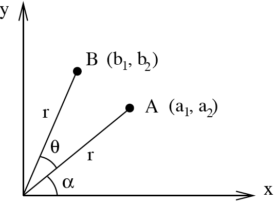

Week 6: Applications of matrices, and Gaussian elimination
\[ \newenvironment{amatrix}[1]{% \left[\begin{array}{#1} }{% \end{array}\right] } \]
Matrices as transformations
One of the key reasons that we see matrices in this module is that they can act as transformations of vectors. Thinking of a 3D vector \({\mathbf{x}}\) as a matrix \(\begin{bmatrix} x_1 \\ x_2 \\ x_3\end{bmatrix}\), we can left-multiply the vector by a \(3\times3\) matrix to give another vector \[ A{\mathbf{x}}. \]
For instance, if the matrix is \[ A=\begin{bmatrix} 3&0&0\\0&3&0\\0&0&3 \end{bmatrix}, \] then for any vector \({\mathbf{x}}\), \[ A{\mathbf{x}}=\begin{bmatrix} 3x_1 \\ 3x_2 \\ 3x_3\end{bmatrix} = 3{\mathbf{x}} \] which is another vector in the same direction, with \(3\times\) the length.
That’s a general rule: if \(A=\lambda I\) for some scalar \(\lambda\), then \(A\) will just multiply the magnitude for \(\lambda\) when applied to any vector. This is called a scaling matrix.
What other transformations are there? We’ll just focus on 2D because it’s easier to sketch.
Rotation matrices
The following matrix rotates vectors around the origin by an angle \(\theta\) anticlockwise: \[ R_\theta = \begin{bmatrix} \cos\theta & -\sin\theta \\ \sin\theta & \cos\theta \end{bmatrix} \] Why? Consider a position vector \(\mathbf{a}=\begin{bmatrix} r\cos\alpha \\ r\sin\alpha \end{bmatrix}\). This is \(\begin{bmatrix} x \\ y \end{bmatrix}\) at polar coordinates \((r,\alpha)\), which hopefully you’ve seen before.
Then applying the matrix, \[ {\mathbf{b}} = R_\theta \mathbf{r} = \begin{bmatrix} r\cos\alpha\cos\theta - r \sin\alpha\sin\theta \\ r\cos\alpha\sin\theta + r\sin\alpha\cos\theta \end{bmatrix} = \begin{bmatrix} r\cos{(\alpha+\theta)} \\ r\sin(\alpha+\theta) \end{bmatrix} \] which is the position vector with polar coordinates \((r,\alpha+\theta)\). This diagram might help: 
Think: What’s the determinant of the rotation matrix \(R_\theta\)?
\(\cos\theta\cos\theta - (-\sin\theta)\sin\theta = \cos^2 \theta + \sin^2\theta = 1\).
Reflection matrices
Consider the matrix \[ P=\begin{bmatrix} 1 & 0 \\ 0 & -1 \end{bmatrix}. \] Then \(P{\mathbf{x}} = [x_1,-x_2]\). All it’s done is reversed the \(y\) component. In other words, we’ve reflected over the \(x\)-axis.
Similarly, \[ Q=\begin{bmatrix} -1 & 0 \\ 0 & 1 \end{bmatrix} \] applied to any vector is just a reflection over the \(y\)-axis.
Think: What’s the determinant of the reflection matrix \(P\)?
\(1\times-1 - 0 = -1\)
All reflections have determinant \(-1\), and all rotations have determinant \(+1\). You can think of the determinant as a scale factor for areas: rotations don’t change the area, and reflections flip it.
To get a reflection through a different line, you can always use a combination of rotations and reflections.
The matrix given by \[ R_{\theta} P R_{-\theta} \] reflects in the line which makes angle \(\theta\) with the \(x\)-axis: first we rotate by \(-\theta\), then reflect over the \(x\)-axis, then rotate back.
Many more transformations exist, such as shear and projection. In 3D they get much more complicated. This sort of matrix is used extensively in the development of video games and computer graphics.
Linear systems of equations
A linear system of equations is a set of simultaneous equations where every unknown variable is multiplied by a number and they’re all added. So it might look something like this: \[ \begin{aligned} 5+3x-z &= 20,\\ y-x+3z &= 2,\\ 5&=x, \end{aligned} \] but we can always rewrite that in a more consistent form \[ \begin{aligned} 3x + 0y +(-1)z &= 15,\\ (-1)x + 1y + 3z &= 2,\\ 1x+0y+0z&=5, \end{aligned} \] and then this can be written as a matrix equation: \[ \begin{bmatrix} 3&0&-1\\-1&1&3\\1&0&0 \end{bmatrix}\begin{bmatrix} x\\ y\\ z \end{bmatrix} = \begin{bmatrix} 3x + 0y +(-1)z\\(-1)x + 1y + 3z\\x \end{bmatrix} = \begin{bmatrix} 15\\2\\5 \end{bmatrix}. \]
This is in the form \(AX=B\), where we know the matrices \(A\) and \(B\) and we want to find \(X\), so we could use the inverse of \(A\): \[ \begin{aligned} AX&=B\\ \implies A^{-1}(AX) &= A^{-1}B\\ \implies (A^{-1}A)X &= A^{-1}B\\ \implies I X &= A^{-1}B\\ \implies X &= A^{-1}B \end{aligned} \] For \(2\times2\) matrices you can easily find the inverse. However, for \(3\times3\) matrices this is inefficient, and we can solve the system without explicitly calculating the inverse of the matrix using a method called Gaussian elimination.
Gaussian elimination
We’ve actually already seen Gaussian elimination, for calculating the inverse of \(3\times3\) matrices. The principle here is the same: perform a series of row operations to simplify the matrix:
- Start with a linear system of equations.
- Write this as a matrix equation \(A{\mathbf{x}}={\mathbf{b}}\) where \(A\) and \({\mathbf{b}}\) are known, and we want to find \({\mathbf{x}}\).
- Write an augmented matrix \([A|{\mathbf{b}}]\).
- Perform a series of row operations to reduce \(A\) to row-echelon form.
- Transform back to a series of equations.
- Use this form to read off the solution.
These steps should become clear when we see an example. First we need to know what row-echelon form means.
Row-echelon form
A matrix is in row-echelon form if each row has more zeros at the start than the preceding row (unless they’re all zero). It is always possible to convert a matrix into this form.
Think: which of the following matrices are in row-echelon form?
\[ A = \begin{bmatrix} 1 & 2 & 3\\0 & 5 & 6\\0&0&1 \end{bmatrix}, B=\begin{bmatrix} 1 & 0 &0\\0 & 0 &0 \\ 0 & 0 &0 \end{bmatrix}, C=\begin{bmatrix} 1 & 0 & 0\\0 & 0 &-4\\ 0 & 0 &1 \end{bmatrix} \]
\(A\) is very standard row-echelon form. \(B\) is in row echelon form, but \(C\) is not because the final row doesn’t have more leading zeros than the previous one.
Example 1
Let’s solve the following system via Gaussian elimination:1
\[ \begin{aligned} x_1 + 2x_2 + 3x_3 &= 1,\\ 4x_1+5x_2+6x_3 &= 2,\\ 7x_1+8x_2+8x_3 &= 3. \end{aligned} \] First we rewrite this as a matrix equation: \[ \begin{bmatrix} 1&2&3\\4&5&6\\7&8&8 \end{bmatrix} {\mathbf{x}} = \begin{bmatrix} 1\\2\\3 \end{bmatrix} \] and then this can be represented with an augmented matrix as \[ \begin{amatrix}{ccc|c} 1&2&3&1\\ 4&5&6&2\\ 7&8&8&3 \end{amatrix}. \] Now let’s put it in row echelon form using row operations, just like last week. We need a zero at the start of the second row: \[ \hookrightarrow\begin{amatrix}{ccc|c} 1&2&3&1\\ 0&-3&-6&-2\\ 7&8&8&3 \end{amatrix} \qquad R_2 \to R_2 - 4 R_1, \] a zero at the start of the third row: \[ \hookrightarrow\begin{amatrix}{ccc|c} 1&2&3&1\\ 0&-3&-6&-2\\ 0&-6&-13&-4 \end{amatrix} \qquad R_3 \to R_3 - 7 R_1, \] and another zero at the start of the third row \[ \hookrightarrow\begin{amatrix}{ccc|c} 1&2&3&1\\ 0&-3&-6&-2\\ 0&0&-1&0 \end{amatrix} \qquad R_3 \to R_3 - 2 R_2, \] This is now in row echelon form. How does this help us? Well, if we write this back as a system of equations we now have \[ \begin{aligned} x_1 + 2x_2 + 3x_3 &= 1,\\ -3x_2-6x_3 &= -2,\\ -x_3&=0. \end{aligned} \] So immediately we know that we must have \(x_3=0\). Then the second of these equations gives us \(-3x_2=-2\), so \(x_2=\frac{2}{3}\), and finally plugging this into the first equation we find \(x_1=-\frac{1}{3}\).
Basically, this method formalises techniques you may have seen before for solving simultaneous equations. It’s particularly useful because it allows us to deal with singular matrices too:
Zero rows
What if we perform Gaussian elimination and get to a point where the final row is all zeros? This happens exactly when the initial matrix is singular, and it means we can’t follow the above procedure to find a unique solution to the system. Instead, we either have no solutions or an infinite number of solutions, depending on whether the final row gives us \(0=0\) or \(0=1\). The second case is impossible, so we have no solutions, whereas if we get \(0=0\) then we have only 2 equations for 3 unknowns, so there are infinitely many solutions.
Example 2
Similar to the previous example, let’s consider: \[ \begin{aligned} x_1 + 2x_2 + 3x_3 &= 1,\\ 4x_1+5x_2+6x_3 &= 2,\\ 7x_1+8x_2+9x_3 &= 3. \end{aligned} \] Proceeding as before, we have \[ \begin{aligned} &\begin{amatrix}{ccc|c} 1&2&3&1\\ 4&5&6&2\\ 7&8&9&3 \end{amatrix}\\ &\hookrightarrow\begin{amatrix}{ccc|c} 1&2&3&1\\ 0&-3&-6&-2\\ 7&8&9&3 \end{amatrix} \qquad R_2 \to R_2 - 4 R_1,\\ &\hookrightarrow\begin{amatrix}{ccc|c} 1&2&3&1\\ 0&-3&-6&-2\\ 0&-6&-12&-4 \end{amatrix} \qquad R_3 \to R_3 - 7 R_1,\\ &\hookrightarrow\begin{amatrix}{ccc|c} 1&2&3&1\\ 0&-3&-6&-2\\ 0&0&0&0 \end{amatrix} \qquad R_3 \to R_3 - 2 R_2,\\ \end{aligned} \] This is in row echelon form. Now the system of equations is \[ \begin{aligned} x_1 + 2x_2 + 3x_3 &= 1,\\ -3x_2-6x_3 &= -2,\\ 0&=0. \end{aligned} \] The final row doesn’t tell us anything, so there are infinitely many solutions. To proceed, and follow the usual process of working backwards to first find \(x_3\), then \(x_2\) and then \(x_1\), let’s say that \(x_3=\alpha\), some number that we don’t know.
Then the second equation says \(x_2 = \frac{2}{3} - 2x_3 = \frac{2}{3}-2\alpha\), and the first equation gives \(x_1 = 1-2x_2-3x_3=-\frac{1}{3}+\alpha\). This is a solution for any value of \(\alpha\), and thus there are infinitely many solutions.
Footnotes
The two 8s in the final equation are deliberate, otherwise it would have been singular.↩︎